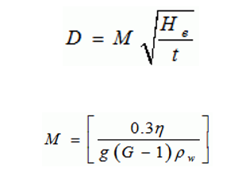

Aim :-
To determine percentage silt size and clay size fractions of the given soil by hydrometer analysis.
Theory :-
The particle size (D) is given by:

In which,
n = viscosity of water in
poise,
G = specific gravity of solids,
Pw = density of water (gm/ml);
He=
effective depth,
t= time in minutes at which observation is taken,
reckoned with respect to the beginning of sedimentation.
The percentage
finer than the size D is given by

Where,
R= corrected hydrometer reading,
Ms= mass of dry soil in 1000ml suspension.